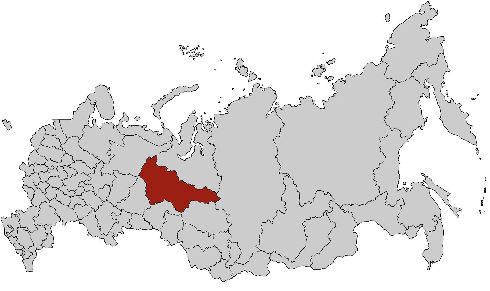
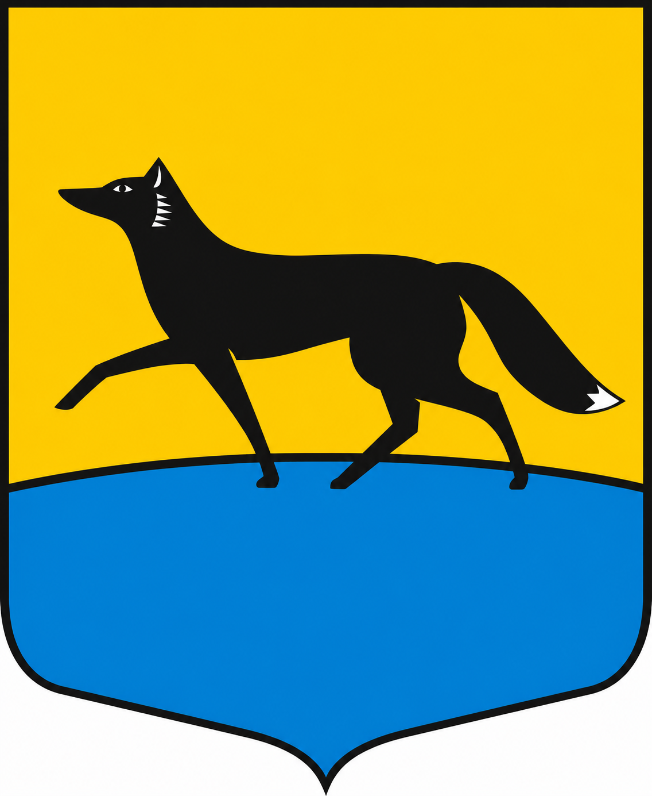

Сезон 2025 - Сургут
Место выезда

Нашивка

Командный состав
- Командир — Пронкин Дмитрий
- Комиссар — Клинаев Виктор
- Мастер — Кощеев Петр
Бойцы
- Алимаев Ратмир
- Белявцев Илья
- Видяева Олеся
- Владимирская Анастасия
- Дмитриев Владислав
- Кабанов Алексей
- Кобзев Игорь
- Костров Дмитрий
- Мельников Роман
- Мовсисян Арсений
- Молокович Дмитрий
- Никитин Вениамин
- Нестеров Владимир
- Орехова (Скороходова) Полина
- Письменный Игорь
- Рязанов Алексей
- Смольняков Тимофей
- Содолевская Мария
- Трубин Серго
- Цветков Валерий
- Цыганков Михаил
О сезоне
Работодатель: ООО «ДСК «Сибпромстрой».
Объект: Завод железо-бетонных изделий.
Виды работ: полный цикл покраски стен (зачистка старого материала, штукатурка, шпаклёвка, грунтовка, покраска) на высоте.
Монолит в составе всероссийской студенческой стройки «Звезда Оби» и бок о бок проводит время с ССО "Рок".
Фотоальбом